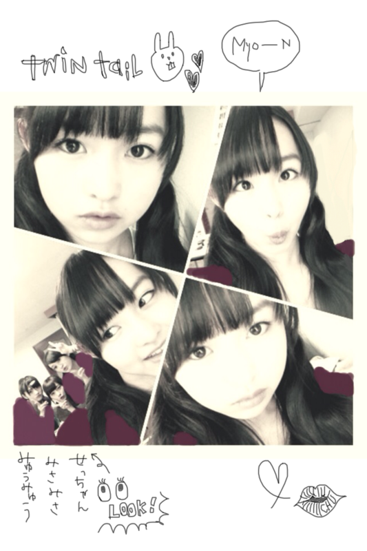
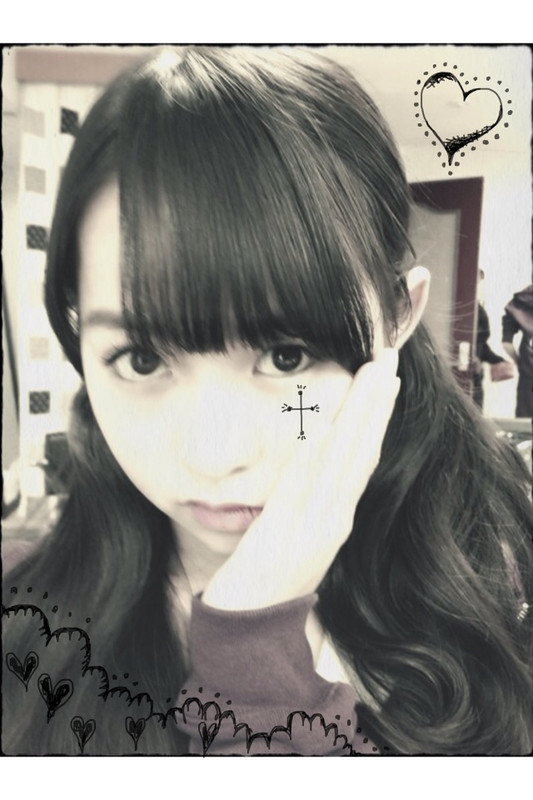

| 2012/01 15 Sun | 52回目*marika |
いつも読んでくださってる方、
初めて読んでくださった方、
コメントしてくださった方、
ありがとうございます!!
ベビたんです:D
..............................
・:D←これから僕も使って良いですか？
ぜひっ☆
はやるかなあ:3るんるん
・動物の中では何がいちばん好き？
ネコ科とは虫類がすき♡♡
ヒョウとトラとワニとトカゲと...←
・今度、握手会でファッションチェック
希望だけどお願いできる？
じゃあチェックしちゃおっかなぁ:)にひ
・デカイ板チョコ持ってるけど、
これは本物のチョコ？
大きくないですよ!
私が小さくなったんです!!
小人になったら
板チョコってこんなおっきいんや
て思いました。
......はいうそです笑
楽屋にあってみんなで食べました:D
中身はしっかりちょっこれいと♪
ですよ~^^
・写メの落書きどうしたら上手く書けますか？
手で描くのって慣れないと難しいです><
でも逆に手で描いてガタガタってなってるの
わざとらしくてかわいいかな?
て思ったります^^*
きれいに描くにはやっぱり慣れることかな...
有料ですけどiphoneならば
『スケッチ』がおすすめです☆
・もし、べびたんがユニット曲貰えるとしたら
何人組で誰と組みたい？
ユニットですか!!
組めたら夢みたいだなぁ。
何人組がいいのかな。
同い年で組むのとか=3
伊藤ちゃんずとか!!笑
今は乃木坂46、33人でじゅうぶんけどね><
・私もファミリーの一員になれるんですか？
逆になってくれるんですか？
そんなの当たり前!!
もちろんです＊
みなさんがいなかったら
今の乃木坂46じゃないです。
・コーヒー飲める!?
...え?
飲めますよ!
コーヒー(ミルク)!!
大人でしょ どやっ←
・コメ書くとき、
マリカってカタカナで書くの、どう思う？
カタカナ見やすいですよね!!
マリカでもいいです^^♡
・オススメ画像アプリおしえて！
画像のアプリですか><
画像を検索するアプリではないんですが
『Instagram』
は、世界中の人が画像を加工して投稿したのを
見ることができるアプリです。
オシャレに加工しててすごい参考になります♡
・:o ←これ赤ちゃんみたいで可愛いから
よく使うんですけど（笑）
これからも使っていいですか？？
かわいいですよね~:D!!
ぜひ使ってください:o♡
..............................
自撮りの数々...


この前の撮影で、
ゆる巻きツインテールにしてもらたああぁぁあ!!!
ずっとおろしてたから
テンション高山やったあぁ
みんなより私は耳の下あたりで
結んでもらったんやけど..
似合ってるかしら^^/てれてれ
みんなで撮影やったんやけど
朝から夜まですっっっごい大変だったよね。
でも本当に
スタッフさん
メンバー
全員で頑張った!!!!
本当にお疲れさまでした*
お仕事、学校、...
そして、試験。
美雲も忙しい中、
お疲れさま*
いとこのお姉ちゃんもお疲れさまです。
高１の私が言うのもですが
頑張ったら絶対に大丈夫です。
努力をしただけ
返ってくると思います。
今日は私はoffでした。
ゆっくり休みました*
選抜のみんなお疲れさま♡
昨日もハードだったけど...
お疲れさまでした><
明日も一緒にがんばろーーーう:)!!

LOVE
ベビたん*****bA by marika